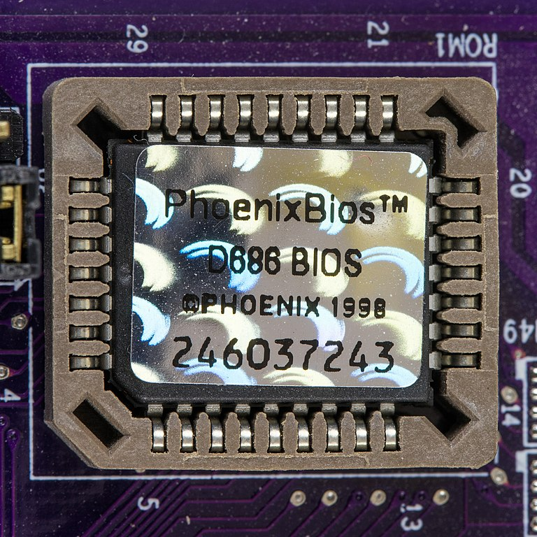
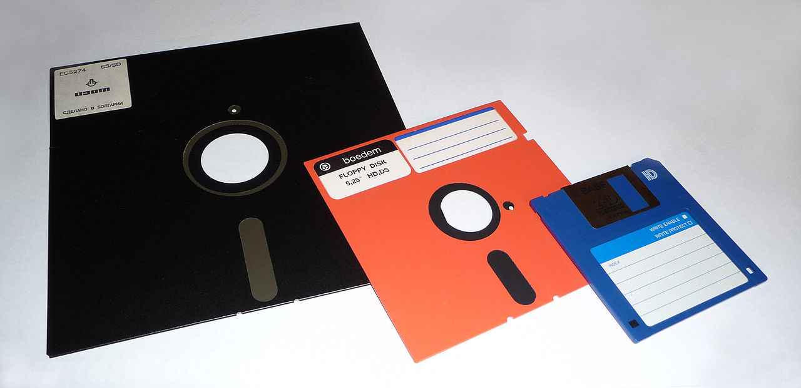

Almacenamiento de información¶
Los ordenadores son dispositivos que tratan y transforman información, por lo que los dispositivos que almacenan esta información son fundamentales para determinar la capacidad y velocidad del ordenador.
Clasificación de dispositivos de almacenamiento¶
Almacenamiento primario
- Memoria RAM
- Memoria ROM
Almacenamiento secundario
- Disco de estado sólido SSD
- Disco duro magnético HDD
Almacenamiento externo
- Unidades ópticas CD-ROM, DVD, Blu-ray
- Memoria USB
- Tarjetas SD
- Cinta magnética
- Discos flexibles
Almacenamiento virtual
- Equipos NAS
- Almacenamiento en la nube
Almacenamiento primario¶
- Memoria RAM
La memoria RAM o memoria de acceso aleatorio es una memoria de almacenamiento temporal para los programas y datos que maneja la CPU.
La memoria RAM debe ser muy rápida para no ralentizar la velocidad de la unidad central de proceso (CPU). Una memoria RAM actual puede transferir 21Gbytes por segundo.
También debe tener suficiente tamaño para contener todos los programas, apps y datos que se estén ejecutando de forma simultanea en el ordenador. En 2022, un smartphone medio suele tener de 4 a 8 Gbytes de RAM y un ordenador personal de 8 a 16 Gbytes de RAM.
Como desventaja, es una memoria que pierde sus datos cuando se apaga la alimentación del ordenador y suele ser mucho más cara que las memorias de almacenamiento secundario, 5€/Gbyte de una memoria RAM frente a 0.02€/Gbyte de un disco duro de 4Tbytes en 2022.
- Memoria ROM
La memoria ROM o memoria de solo lectura es una memoria de almacenamiento permanente de programas del ordenador. Es donde se almacena el denominado Firmware, programas de solo lectura que manejan un dispositivo.
Las memorias ROM que se utilizan hoy en día no son de solo lectura, suelen estar basadas en tecnología Flash y se pueden reescribir, aunque esto se realiza con muy poca frecuencia.
Ejemplos de ROM son la memoria del BIOS (Sistema Básico de Entrada Salida) de un ordenador personal, o el programa interno de dispositivos como un router, un mando a distancia, etc.
Memoria Phoenix BIOS de una placa base de ordenador personal.¶
© Raimond Spekking, CC BY-SA 4.0, via Wikimedia Commons.

Almacenamiento secundario¶
- Unidad de disco duro (HDD)
La unidad de disco duro es un tipo de memoria secundaria basada en un disco giratorio impregnado con una sustancia magnética que permite almacenar información de forma permanente.
Los discos duros son los encargados de almacenar los programas y los datos para que se mantengan mientras el ordenador está apagado.
Cuando un usuario de ordenador quiere utilizar un programa o visualizar un archivo de datos, la información se lee desde el disco duro y pasa a escribirse en la memoria RAM para que la CPU pueda trabajar con ellos.
Los discos duros llevan muchos años en el mercado (desde 1956) por lo que se basan en tecnologías asentadas y muy optimizadas. A pesar de ello van sustituyéndose poco a poco por los SSD por las múltiples ventajas que presentan.

Unidad de disco duro (HDD) con conexión SATA, vista desde abajo.¶
Dmitry Makeev, CC BY-SA 4.0, via Wikimedia Commons.- Unidad de estado sólido (SSD)
La unidad de estado sólido es un tipo de memoria secundaria basado en chips de tecnología Flash que almacenan información de forma permanente.
Son más modernos en el mercado que los discos duros (desde 2009) y tienen menos capacidad a igualdad de precio, pero van mejorando rápidamente con los años y están sustituyendo poco a poco a los discos duros tradicionales.

Unidad de almacenamiento de estado sólido (SSD) con conexión PCI Express.¶
D-Kuru, CC BY-SA 4.0, via Wikimedia Commons.Comparación entre las unidades de estado sólido y los discos duros
- Ventajas:
- Mayor velocidad de transferencia. 600MB/s de un SSD frente a 100 Mbytes/s de un HDD
- Menor tiempo de acceso. 0ms de un SSD frente a 10 milisegundos de un HDD.
- Mayor resistencia a los golpes y a las vibraciones.
- Menor consumo eléctrico. 4W o 5W de un SSD a máximo rendimiento frente a 6W a 10W de un HDD.
- Menor tasa de fallos de los SSD al no tener partes mecánicas.
- Menor tamaño físico
- Menor ruido generado
- Desventajas
- Menor resistencia a muchas escrituras.
- Mayor precio por Gbyte. 0.02€ de un HDD frente a 0.09€ de un SSD.
Almacenamiento externo¶
- Memoria USB
La memoria USB es una memoria externa basada en memoria flash con conexión de tipo USB.
- Tarjeta SD
La memoria en tarjeta SD
- CD-ROM y DVD
- Blu-Ray
El Blu-ray
- Cinta magnética
- Discos flexibles
Los disquetes o discos flexibles
Discos flexibles (floppy disks) de diferentes tamaños.¶
George Chernilevsky, Public Domain, via Wikimedia Commons.


{kind=link}
{kind=link}
Almacenamiento virtual¶
- Servidor NAS
El servidor NAS

Synology DiskStation NAS (Network Attached Storage) de 6 bahías.¶
Radha 1100, CC BY-SA 4.0, via Wikimedia Commons.- Almacenamiento en la nube
La nube